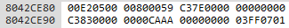
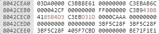
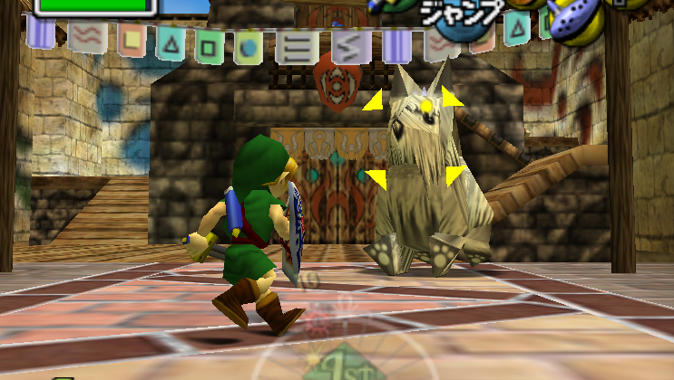

Investigations of a Dog
A close look at an actor in RAM
Header image: Nicolas Toussaint Charlet, Head of a Dog (c.1820-1845)
Although it is decades old, fan communities have only recently been able to investigate the “Zelda64” engine that supplies the procedural foundation for both Ocarina of Time and Majora’s Mask. The creative force of speedrunning communities in particular has been key to breaking through the mystery imposed by Nintendo’s strict approach to intellectual property. Much of the public understanding of the engine has long been a careful, communal accumulation of intuitions derived from the experience of play. More recently, the “debugging” functionality in game emulators and community “decompiles” of Ocarina and Majora’s source code hosted on GitHub have provided some technical solidity to these intuitions.
One of my aims with this blog is to begin introducing hermeneutic dimensions to this ongoing investigation of the Zelda64 engine. What new meanings are produced when we fold a knowledge of the game’s engine back into its "representational layer"? How might we read technical processes like dynamic memory allocation thematically?
However, for this short post my ambitions are modest. Relying on community knowledge and tools, I will take a close look at one Zelda64 actor: the dog in South Clock Town.
I have chosen this particular dog for various reasons. First, you can interact with a dog actor in multiple ways: you can pick it up, you can have it follow you, you can let it attack you, and you can even prompt dialogue from it. It therefore provides a good example for how all these interactions work. Secondly, there are multiple instances of this actor in both Majora and Ocarina, which allows for meaningful comparisons between individual instances and the two games. Finally, since this particular instance of the dog actor is located right at the start of a 3-day cycle, it has long been a “default” actor selected by hackers to experiment with the game. Since I borrow heavily from this tradition, I chose this actor to pay homage to it.
A new cycle begins. The Nintendo 64’s central processing unit (CPU) accesses the “scene” file for South Clock Town, stored in Majora’s Read-Only Memory (ROM). ROM is “non-volatile” memory, permanently written into the game cartridge and unalterable. All the basic components of a videogame like Majora—the character models and animations, the objects and “textures” of the environments, the scripts that determine what actions you take, the text and music—are stored in ROM at certain addresses. This is what Majora is, independent of the player, the Nintendo 64 console, and its thick plastic cartridge: a block of 32 mebibytes (MiB) of ROM.
The CPU accesses the South Clock Town scene file, inside which is, among other things, a list of actor memory addresses along with a separate list of these actors’ initial coordinates and rotations (i.e. where they are and in what direction they are facing). The CPU locates these actors in the ROM and loads them onto the Random-Access Memory (RAM).
Located in the N64 console, RAM is a “volatile” memory: it stores information so long as the console remains powered on. It allows the CPU to access and execute information retrieved from a game’s ROM in a non-linear fashion. When we describe a scene “loading” or an enemy “spawning” in a videogame, we are speaking about a CPU accessing information from a game’s ROM and executing it on the console’s RAM. An N64 has 4 MiB of RAM, although the “Expansion Pak” adds a further 4 MiB. Majora requires this add-on, since it addresses 8 MiB of RAM.
With all this in mind, we can now turn to consider the South Clock Town Dog as represented in RAM.1

The Project64D debugger represents the RAM as a list of hexadecimal values. We usually count in decimal or “base-10” numbers, using ten numeric characters from 0 to 9 before adding a new digit. However, a hexadecimal or “base-16” system counts from 1 to 9 and then A to F, allowing for sixteen characters. This reduces the amount of RAM required to store information.
The numbers running down the left and across the top, in a darker grey, are offset values: these are the addresses used to locate and access bytes of information in ROM and RAM. The 8MiB of RAM in Majora occupies the offsets 0x80000000 to 0x807FFFFF.2
Our particular instance of the Dog actor is located at offset 0x804CE80 in RAM.
An actor is a collection of files, foremost among which is the overlay. This is a file containing the actor’s unique code, which is transferred to RAM when that actor spawns. One overlay file can be used to cover multiple instances of an actor: this is how the game is able to handle the dozens of dog actors in the “Doggy Racetrack” scene, for example.
We can now begin to start deconstructing the different components that make up our dog actor. First of all, for just over the first two lines (0x8042CE80 to 0x8042CEA0), we have information that “points” to ROM files containing data about the dog actor as well as its particular instance in this scene (see Fig. 1). The 00E2 that begins this instance is constant across dog actors, whereas the rest of the numeric information differs.
The following five lines contain dynamic information about the actor’s position in the scene (see below). The three bytes of shifting information spanning addresses 0x08042CEA4 to 0x8042CAC (top line) contain the actor’s X, Y and Z coordinates. You’ll notice the information remains static for a few seconds as the dog stops moving to bark.
The single byte of information at 0x8042CEB0 (Fig. 4: start of second line down) contains the dog’s rotation data. It changes as the dog moves in its circle around the scene, and like the XYZ coordinates it pauses when the dog stops to bark.
Skipping over a few bytes, the three that span offsets 0x8042CEBC to 0x8042CEDE0 (Fig. 4: bottom two lines in above image) contain data about the dog’s scale, with X, Y and Z axes. The Y axis stays at 0 while the dog remains on the ground, but rises to around 421A0000 when picked up.
The Project64D debugger functions like a hex editor, meaning that the user can fiddle with the values stored in RAM. Editing the bytes of XYZ data in the debugger moves the dog around the scene, while editing the rotation data causes the dog to turn around on the spot. This is how I mapped out these values. Enjoyably, editing the dog’s scale causes it to enlarge and shrink along X, Y and Z axes.
Returning to the information I skipped over, the three bytes spanning 0x8042CEBC to 0x8042CEC4 (Fig. 4: lines 2 and 3) contain the location of the dog’s marker for “Z-targeting”. This is the system by which the player presses the Z button in order to “lock-on” to actors in the game world. This is an important feature of the Zelda64 engine, one that has since become standard for games such as Dark Souls.
With Majora being a game that is thematically interested in masks and faces, we might find some significance in the fact that the Zelda64 engine decouples the visible face of an actor’s model from the “informatic face” that the player-avatar faces. The XYZ coordinates of the Z-targeting marker are not trained on the dog’s head but rather on just above its head. Editing them in the debugger changes the location of the yellow arrow located over the actor. Doing so while the player is locked on to the actor causes the boy to spin around, and the yellow arrow hovering above the actor to move.
This decoupling of an actor’s faces reminds me of Gilles Deleuze and Félix Guattari’s desire to escape the restrictive cultural focus on the face—“white cheeks, a chalk face with eyes cut in for. a black hole”:
the face is a horror story. It is certain that the signifier does not construct the wall that it needs all by itself; it is certain that subjectivity does not dig its hole all alone. Concrete faces cannot be assumed to come ready-made. They are engendered by an abstract machine of faciality (visagétité), which produces them at the same time as it gives back its white wall and subjectivity is black hole. Thus the black hole/white wall system is, to begin with, not a face but the abstract machne that produces faces according to the changeable combinations of its cogwheels. Do not expect the abstract machine to resemble what it produces, or will produce.
What might it mean to re-read the themes of Majora through an understanding of how faces and facing function in the game’s memory? What would it mean to think of a face not as a feature or property of an individual but rather as something assigned, or as a relation? This will require further investigation into actor files.